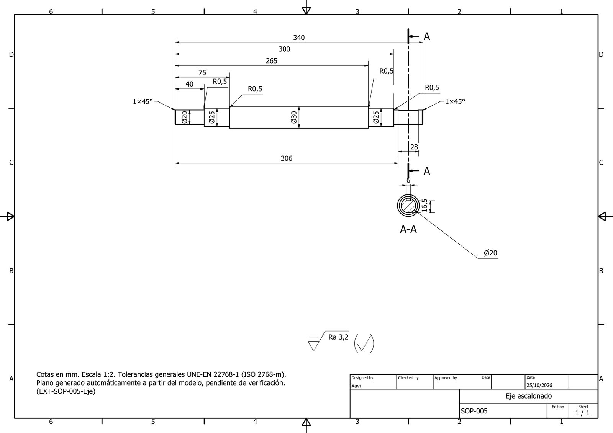
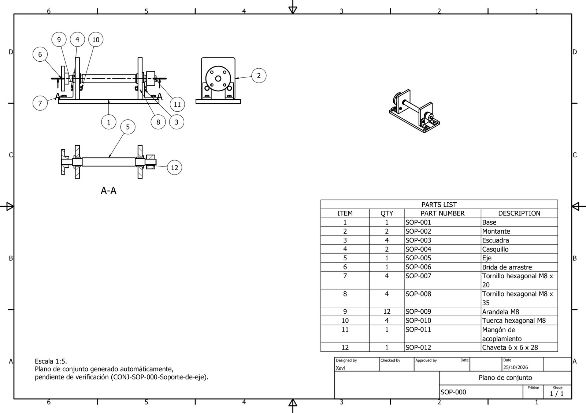
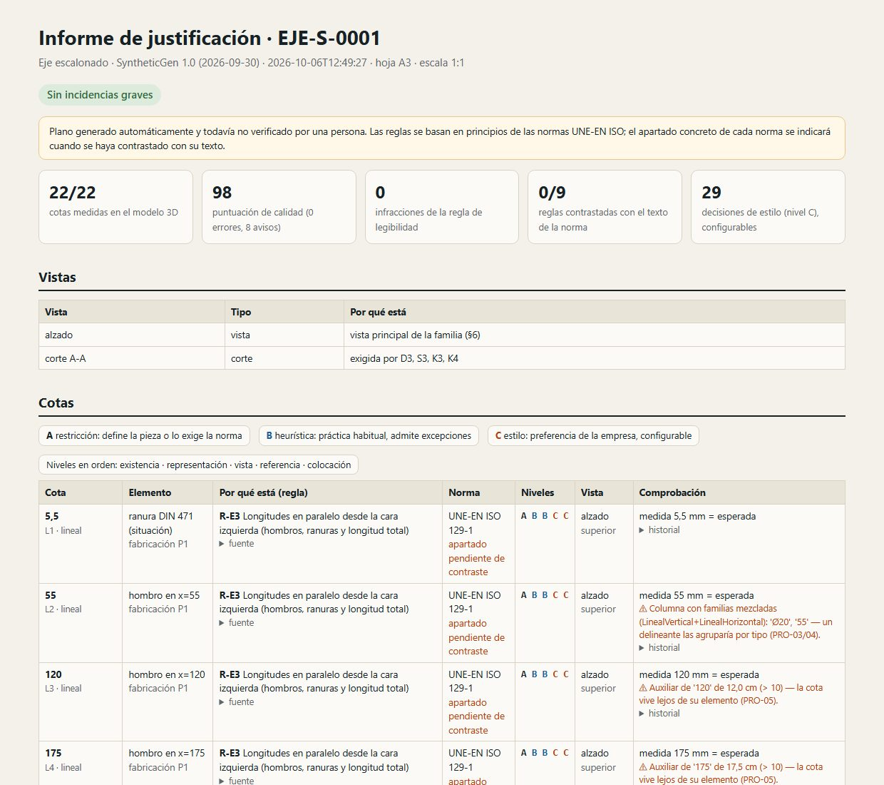
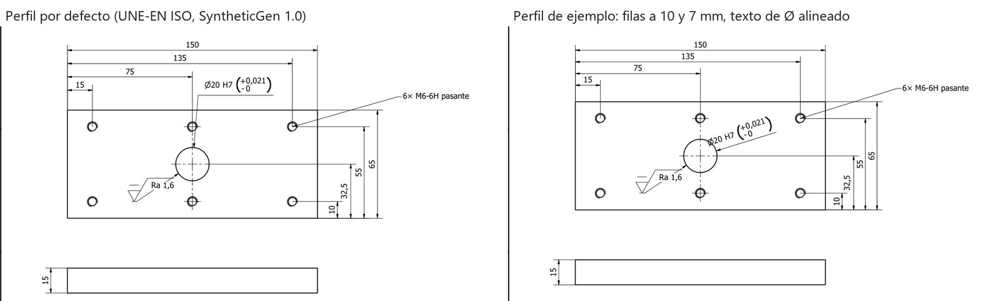
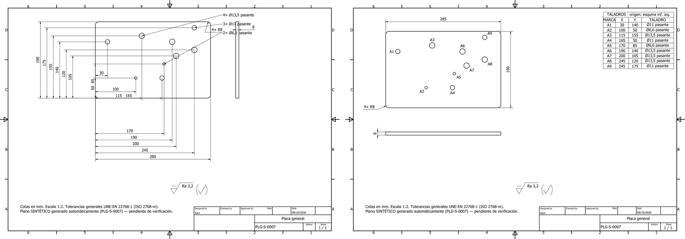

Case study · Final-year project · UPV
An Autodesk Inventor add-in that generates and reviews manufacturing drawings from 3D models, and justifies every dimension with the rule and UNE-EN ISO standard behind it.
Inventor can project views and retrieve model dimensions, but choosing which dimensions a machinist needs, in which view and where to place them so the sheet is readable and compliant, is still a drafter's job, and every company does it slightly differently.
Historical drawings don't record which 3D feature each dimension refers to, so that knowledge is hard to reuse or check.

Each dimension starts as an intent (feature, value, priority, rule, standard, allowed views) and is classed as a hard constraint, a professional heuristic or a company style choice. Only then is it placed on the sheet.
Five part families: shafts, bushings, flanges, plates with hole tables, L-brackets.
Missing or duplicated dimensions, readability, scale and title block, marked on a sheet sketch.
Learns a readable, editable style profile from 5–20 company drawings, with a confidence per parameter.
Views, isometric, parts list and balloons; switches to a section if a part is hidden.




Read these numbers in context. Most evidence comes from synthetic parts and from defects injected into the system's own drawings: it measures technical correctness, not professional quality or time saved. Evaluation with practising drafters and real company drawings is the next milestone.